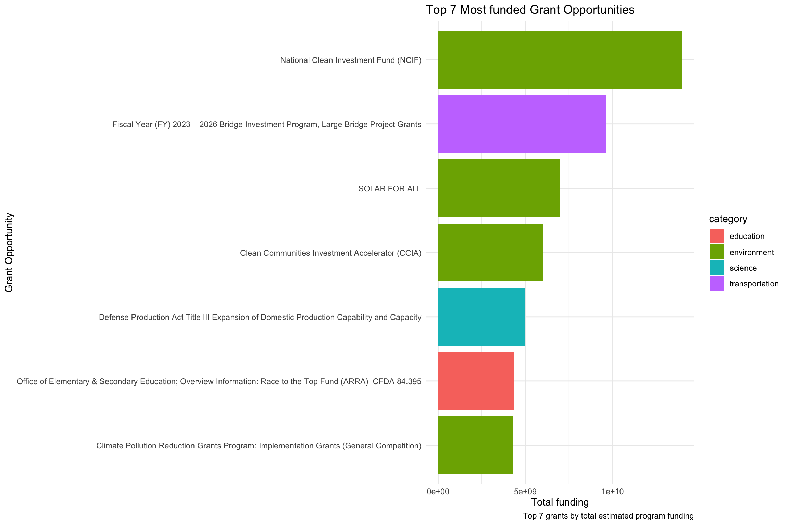

#1: First, filter the relevant data
grants <- grants %>% filter(opportunity_status!="Closed" & opportunity_status != "Archived")
grant_detail_24 <- grant_detail %>% filter(current_closing_date_for_applications > 2024)
#2: Making category a variable by pivot longer
grants_long <- grant_detail_24 %>%
pivot_longer(
cols = "category_agriculture":"category_other",
names_to = "category",
values_to = "value"
) %>%
filter(value == TRUE)
#3: Remove the category prefix in category
grants_long <- grants_long %>% mutate(category = gsub("category_", "", category))Take a look at how grant opportunities look like in the U.S.
Government grants can be a game-changer for many businesses, especially startups or organizations seeking financial support for specific projects. With billions of dollars available each year in the U.S., knowing how to navigate and target the right grants is essential. In this blog, we’ll take a look at how you can identify key government grant opportunities and focus on the categories that are receiving the most attention in 2024.
Why Pay Attention to Government Grants?
Grants can provide essential funding for businesses that might not have enough capital for product development, research, or infrastructure improvements. For example, if you’re a start-up with limited cash flow or don’t qualify for bank loans, government grants offer a potential lifeline. Understanding what sectors the government prioritizes is key to focusing your efforts on where you’re most likely to succeed.
Data description
Data source and data cleaning steps
The data is sourced from TidyTuesday packgae on github. This data set downloaded are then being filtered to only include the posted or forecasted grants with close date in 2024 or after, since the point of interest is about what could be useful grant opportunities for our clients.
The data cleaning steps consist of the following:
Data variables
The main variables used are category of grants, which is classified by the function of grant opportunities. Estimated total program funding is another summarising variable to rank the grants, as the more Estimated funding amount in dollars for the grants, the more focus they obtain. Award ceiling and award floor represent the maximum and minimum individual award amount in dollars correspondingly.
Top 5 grant categories
| Category | Number of Grants |
|---|---|
| health | 1065 |
| education | 453 |
| science | 384 |
| environment | 216 |
| income_security | 177 |
Let us first have a glance of the categories of grants that are mostly supported. It’s clear from Table 1 that the health sector dominates U.S. government grant funding in 2024, with 1065 grants posted. This reflects a national focus on public health and research into health issues, aiming to improve overall well-being. Innovation in science, including computer science and engineering, also sees substantial investment, indicating the government’s emphasis on technological progress. Education, environment, and income security also receive significant attention, reinforcing support for human capital development, environmental protection, and social welfare.
Top 7 grant opportunities by total estimated program funding

Knowing which individual grants have the largest funding amounts can help you prioritize your applications. Some grants offer enormous potential for businesses in certain sectors.
Here are some of the biggest opportunities for 2024 in Figure 1:
- Substantial funds for environment programs: The first is NCIF, serving with estimated $13.97m to urge companies to be involved in green capital, climate change and renewable energy projects. This is also aligned with the third and fourth most funded grant, solar for all, CCIA together with climate pollution program aiming to lower energy bills and pollution for all. All these environment grants represent a common goal for all companies to contribute to the nationwide “benefit from the program through energy bill savings, cleaner air, job creation, and more.”(“National Clean Investment Fund | US EPA”)
- large Bridge Project Grants: Apart from sustainable energy projects, bridge investment occupy the second most estimated funding grant, which is ideal for infrastructure companies working on transportation, public works, and materials technology.
- The Defense Production Act with estimated $5b funding is prepared to expand domestic production capabilities. Clients developing new “Manufacturing & Industrial Technologies”(Department of Defence) and production advancements improving domestic supply chains could be beneficial.
- Race to the top fund(ARRA): the major grant in education would be estimated to fund $4.35b to “achieve significant improvement in student achievements and outcomes”(Centre for public impact, 2016). Education innovations and policy deliberations would address the achievement gap and prepare pupils for further education and better enter the job market. This would benefit education technology companies.
These most popular funding opportunities might mean that align their projects with the grant requirements would assist them in securing funding, as these grants are deemed as core national objectives. For instance, companies with manufacturing processes could develop innovative solutions in reducing the pollution, applying Climate Pollution Reduction Grants Program might be a helpful grant.
Comparing Award Ceilings and Floors by Category
It’s not just about how much total funding is available—it’s also important to look at the average award sizes for different categories. Some grants offer a high ceiling, meaning they can provide substantial financial support for big projects.
Big Winners: Transportation and Environment
In Figure 2, transportation demonstrate the highest difference that soars to around $300 million. This means if you’re working on transportation-related projects, you’re looking at some serious funding potential. Infrastructure projects, for example, often require large sums, and this category reflects that.
It is not surprising that Environment follows as another key category with a substantial difference, over $100 million. If you’re working in areas like renewable energy or environmental protection, this is where the big bucks are. Energy also shows a notable difference, making it another promising area if your work involves innovative energy solutions.
Consistent, Smaller Categories
For categories like education, employment, and science, the differences between ceilings and floors are much smaller. While these categories may not offer the same massive funding as transportation or environment, they still present great opportunities for projects with more moderate financial needs. These categories are likely to provide more consistent, steady grant sizes, making them ideal for smaller-scale initiatives.
Other Categories with Potential
If your work touches on consumer protection, disaster relief, regional development, or housing, there’s still meaningful funding here, but with more modest ceilings. These categories probably support more focused or smaller-scale projects, but they should not be ignored since there’s still plenty of room to explore.
Takeaways:
Transportation and Environment: If your project requires big budgets, these are the categories to watch. They’re where the largest funding gaps are, offering major potential if your project aligns.
Smaller Project: Categories like education and employment are more stable with consistent funding, making them ideal for smaller, well-defined projects.
So, depending on your project’s needs, focusing on high-ceiling categories can give you a competitive edge when it comes to scaling, while smaller projects could thrive in categories offering more consistent funding. Knowing where the money is concentrated helps you strategise better and apply for the right grants!
Applying for Grants: What You Need to Know
When applying for grants, keep in mind that competition can be fierce, so it’s important to align your project with government priorities. Here are some tips to keep in mind:
Target High-Priority Areas: As seen from the data, health, education, and environmental projects have substantial funding. Focus on these areas if they align with your business goals.
Look at Award Sizes: Not every grant is going to meet your funding needs. Some grants are tailored for larger, well-established businesses, while others may be a better fit for start-ups or smaller projects.
Understand the Application Process: Each grant has its own application requirements. Make sure you’re thoroughly prepared to meet deadlines and submit all necessary documents.
Stay Innovative: The government is interested in innovative solutions, whether in technology, infrastructure, or public health. Show how your project stands out from the crowd.
Government grants play a pivotal role in distributing funding across key sectors of the U.S. economy. With billions of dollars allocated annually, it’s essential for businesses and organizations to identify where the government focuses its investments to make informed decisions on funding applications. Knowing where the money is concentrated helps you craft a smarter grant application strategy. Whether you’re aiming for big bucks in infrastructure or seeking steady support for an education initiative, aligning your projects with the right categories is key to securing funding.
Ready to apply for a grant? Take a closer look at the categories and programs mentioned in this guide, and start preparing your application today!
References
Centre for public impact. “National Clean Investment Fund | US EPA.” US EPA, 10 July 2023, www.epa.gov/greenhouse-gas-reduction-fund/national-clean-investment-fund#:~:text=Under%20the%20%2414%20billion%20National.
“Race to the Top (RTT): Reforming Education in Key American States.” Centre for Public Impact (CPI), 15 Apr. 2016, www.centreforpublicimpact.org/case-study/race-to-the-top-education-competitive-grant-in-the-us.
Department of Defence. “Defense Production Act Title III Expansion of Domestic Production Capability and Capacity | Research Funding.” Duke.edu, 12 July 2024, researchfunding.duke.edu/defense-production-act-title-iii-expansion-domestic-production-capability-and-capacity